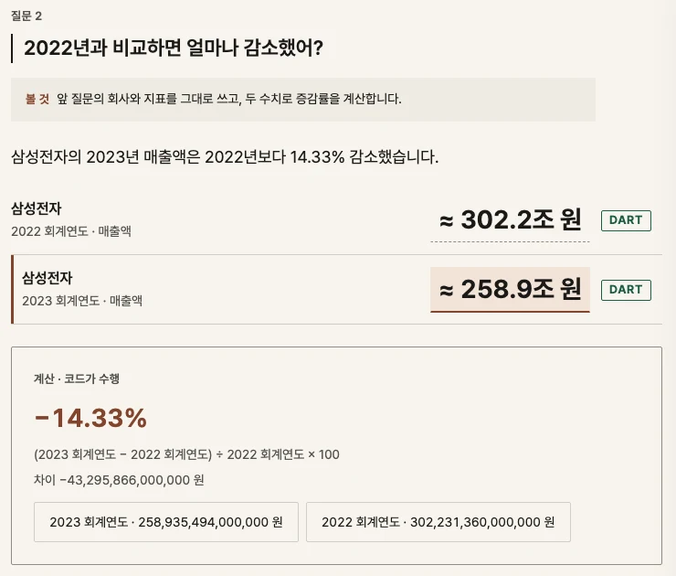
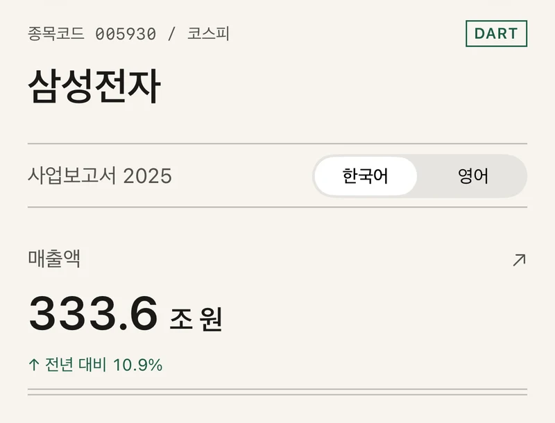

인공지능·데이터 서비스를 만드는 개발자
Python · FastAPI · PostgreSQL · TypeScript · LLM 응답 검증
웹 · AI · 개인 프로젝트 · 2026.09–2026.11
공시 숫자를 묻고 비교하면 근거와 함께 답하는 앱
Python · FastAPI · LangGraph · PostgreSQL · React
- 120회한·영 시나리오 실행 통과
- 2.96초응답 시간 중앙값M1 Pro
- 15개검증한 공시 수치

질문후속 질문 포함
의도 해석로컬 Gemma
근거 · 계산코드 · Decimal
저장PostgreSQL
iPhone 앱 · AI · 개인 프로젝트 · 2026.07–2026.11데모
공시 숫자를 원문 근거와 함께 읽는 앱
Python · FastAPI · PostgreSQL · pgvector · SwiftUI
- 24/24기준 질문 통과3개 기업
- 18개기업연간 공시 23건
- 519오프라인 테스트 통과

공시 수집DART · SEC
검색pgvector · HNSW
설명 생성Gemini · JSON 스키마
검사인용 · 수치
웹 · 데이터 · 개인 프로젝트 · 2026.03–2026.11운영 중
NBA 팀의 휴식일과 이동 거리를 비교하는 사이트
TypeScript · Next.js · PostgreSQL · Drizzle ORM · Python · scikit-learn
- 783건1차 출처로 보완한 연장전 기록
- 346건NBA 박스스코어로 추가 수정한 연장전 기록
- 51,695저장된 경기예정 일정 포함

일정 수집매일 자동 실행
휴식 · 이동 계산TypeScript
저장PostgreSQL · 행 잠금
화면Next.js · CDN 캐시
웹 · AI · 팀 프로젝트 · 2026.05–2026.06
아기 알레르기 기록과 AI 이유식 식단 앱
FastAPI · PostgreSQL · Azure OpenAI · React · FCM
- 우수상아카데미 최종 발표 2위
- 5인 팀팀장코드 검토와 병합

아이 정보월령 · 알레르기 기록
후보 선정코드
식단 생성Azure OpenAI · JSON
결과 보정코드
오늘비TypeScript · Next.js · PostgreSQL운영 중
다섯 날씨 서비스의 비 예보를 비교하는 사이트
예보 수집다섯 서비스
저장발표 당시 그대로
관측 대조기상청 97개 지점
가중 합산Brier 점수
- 발표 당시의 예보는 덮어쓰지 않고 그대로 보존
- 기상청 97개 지점의 실제 관측과 대조
Stock GameFastAPI · PostgreSQL · React운영 중
가상 자금으로 한국·미국 주식 투자를 연습하는 게임
주문JWT 인증
행 잠금FOR UPDATE
체결동시성 테스트
자산 기록매시간
- 잔고 확인과 차감을 행 잠금으로 한 번에 처리
- 실제 PostgreSQL에서 동시성 테스트 케이스 17개
Allergy TrackerReact Native · Expo · SQLiteApp Store
아기가 처음 먹은 재료와 반응을 기록하는 앱
관찰 시작한 번에 하나
매일 기록같은 날 한 번
관찰 종료조건부 갱신
상태 계산기록에서 계산
- 재료 상태는 저장하지 않고 기록에서 계산
- 관찰은 한 번에 하나만 진행되도록 트랜잭션에서 검사
무한초성Spring Boot · PostgreSQL · SwiftUITestFlight 베타
초성 두 개에 맞는 두 글자 명사를 60초 동안 찾는 단어 게임
한 판60초 · 오프라인
대기열기기에 저장
제출SHA-256 키
저장PostgreSQL · Flyway
- 같은 판의 제출은 SHA-256 키로 한 번만 저장
- 인터넷이 없으면 기기에 쌓아 두었다가 나중에 전송
Glass TableSwift · SwiftUITestFlight 베타
포커를 처음 배우는 사람을 위한 연습 앱
문제 생성시드 고정
승률 계산모든 경우
복습 일정FSRS-6
저장원자적 쓰기
- 승률은 표본 추정 대신 모든 경우를 세어 계산
- 저장에 실패하면 진행 상태를 넘기지 않음
교육
- Microsoft AI 소프트웨어 아카데미 3기
- The University of Texas at Austin
자격증
- Azure AI Fundamentals (AI-900)
- SQLD